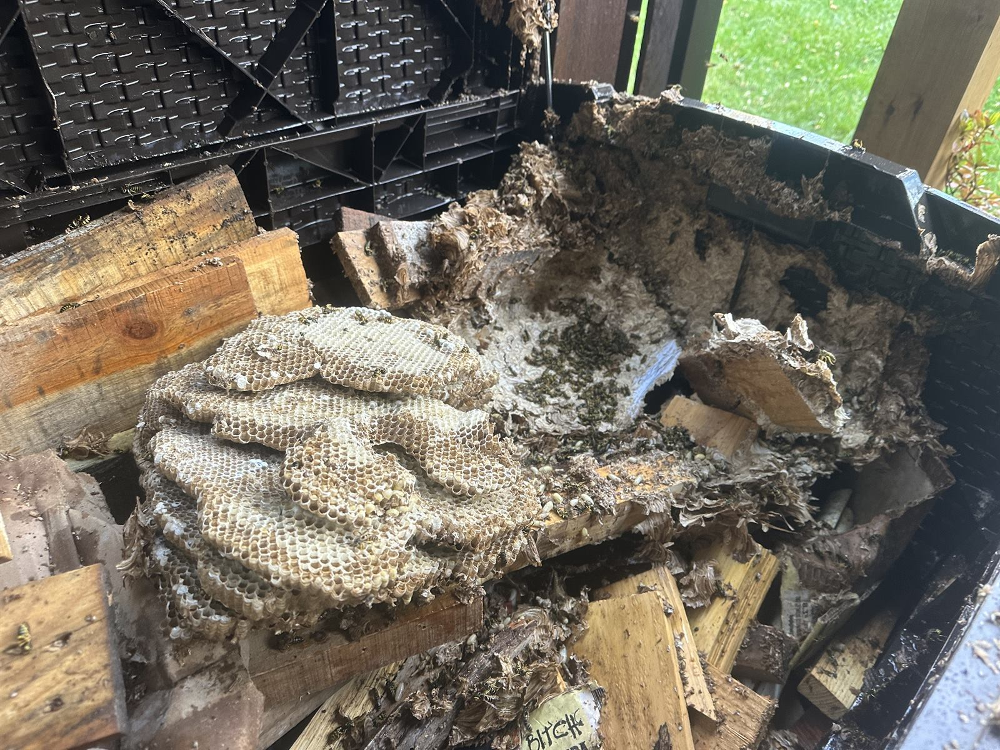

Yellow jackets streaming in and out of a gap in your siding, soffit, or brick in Harrisburg — whatever you do, don't plug that hole and don't spray it. Trapped in a wall, they chew inward. Licensed PA pesticide applicator, same-day response, treated properly through the entry point.
Same-Day Removal — Call or Text 717-379-3248Search "yellow jackets in my siding" and half the advice you'll find says to spray the entrance and then plug it with caulk or steel wool. That advice will put wasps inside your house.
Here's why. A nest in a wall void has exactly one door. Block it, and a colony of a few thousand insects doesn't politely die — it chews toward the next source of light and air it can find. In a Harrisburg home that is very often the interior: through drywall, around an outlet box, out of a ceiling light, behind baseboard trim. We get these calls every August, and they always start the same way: "I sprayed it and sealed it up, and now they're in the bedroom."
A ground nest is out in the yard. A wall nest is inside the building envelope, and that changes things:
People call everything with a stinger a bee. What's in your wall determines who should handle it and what it costs, so we identify before we treat — always.
Shiny, hard-edged yellow and black, fast and darting. Heavy two-way traffic at one small gap, building through late summer and peaking August into October. Aggressive when the nest is disturbed, and they sting repeatedly. This is standard pest-control work and what most siding calls turn out to be.
Paper wasps build small open umbrella-shaped combs under eaves, behind shutters, in soffit corners — visible, smaller colonies, less aggressive. European hornets are big, loud, active at dusk, and nest in wall voids and hollow trees. Both are treated similarly to yellow jackets.
Fuzzy, amber-brown, heavy deliberate flight, often with pollen visible on their legs. If it's honey bees in your wall, we don't spray them. They get live removal and relocation — and unlike wasps, that job does mean opening the wall, because the comb and honey have to come out or you'll get robbing, staining, and a new swarm next spring. Different work, different price. We'll tell you which you have before anyone starts.
Big and bumble-bee-like, but they bore perfectly round pencil-width holes into wood fascia, trim, decks, and rails rather than using an existing gap. Damage accumulates over years as they re-use and extend galleries. Treated and the galleries sealed — see stinging insects.
Not sure? Text a photo to 717-379-3248. Free identification, usually within the hour. About 1 in 3 "yellow jacket" calls we get turns out to be honey bees, which is exactly why we look first.


For wasps, this is usually straightforward and does not involve opening your wall:
Cost: soffit and accessible wall-void nests run $225–$375. Aerial hornet nests — the exposed grey ones — run $200–$325. A breakthrough into a living space runs $375–$500. Multiple nests on a property get bundled. Estimates are free, and a texted photo usually gets you an exact number without a visit.
If someone has been stung and shows swelling beyond the sting site, trouble breathing, or dizziness — call 911 first, then call us.
Worth knowing before we treat, because it worries people who weren't warned. A dust treatment kills the adults that walk through it, but the brood already sealed in the cells keeps hatching. Every one of those newly emerged adults has to walk out through the treated nest, and if there's any gap at all between the void and your living space — a light fixture, an outlet, a baseboard, a ceiling vent — a few of them will find it.
That's the treatment working, not failing. They're coming out because the colony is collapsing, and they'll be sluggish. Vacuum them up as you see them and it tapers off on its own.
How long depends heavily on the time of year:
If you're still seeing steady numbers well past that window, call us — that's worth a look. A handful trickling out inside the window is expected.
This is the version of a wall nest that stops being a nuisance and becomes an emergency. Drywall is soft, and a colony that has been sprayed, sealed out, or simply run out of room will chew straight through it. What you get is wasps coming out of a ceiling vent, a light fixture, a baseboard gap, or a hole in the wall itself — inside the house, in numbers, with nowhere to go.
This gets same-day priority, and it is the one situation where we work inside. Our pest control is perimeter-only for routine work, but a breakthrough is not routine.
Cost: breakthroughs into a living space run $375–$500. That reflects the same-day response, the interior work, and the fact that it is two jobs — clearing the house and then dealing with the nest.
All of the City of Harrisburg (17101–17104, 17109, 17110) — Midtown, Allison Hill, Uptown, Bellevue Park, Boas Heights, Italian Lake. Inner suburbs: Penbrook, Paxtang, Steelton, Highspire. Outer suburbs: Colonial Park, Lower Paxton, Susquehanna Township, Linglestown. Plus Hershey, Hummelstown, Mechanicsburg, Camp Hill, Palmyra, Middletown, Carlisle, and Lebanon.
Same-day response through stinging insect season. Free identification by text, and if it turns out to be honey bees we'll remove them alive instead of spraying. Locally owned, PA-licensed pesticide applicator, fully insured — serving Harrisburg and all of Dauphin County.
Call or Text 717-379-3248